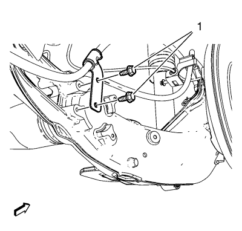
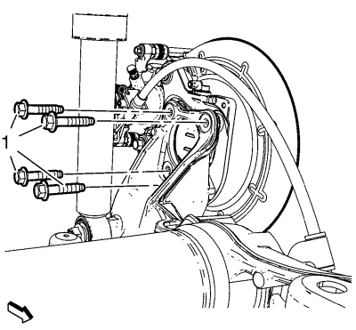
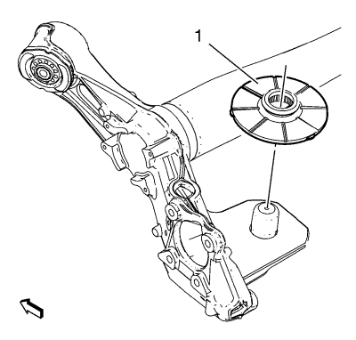

Sustitución del eje trasero
Herramientas especiales
EN 45059 Kit de goniómetro de par de apriete
Si desea informarse sobre herramientas regionales equivalentes, consultar Herramientas especiales .
Procedimiento de desmontaje
- Elevar el vehículo y soportarlo de manera adecuada. Consultar Elevación y soporte en alto del vehículo .
- Desmonte la rueda del vehículo. Consultar Desmontaje y montaje de la rueda y el neumático .

- Desmonte ambos pernos de latiguillo de freno (1) acoplando el tubo flexible al soporte de la pinza del freno trasero.

- Desmonte los pernos de soporte de la palanca de freno de mano (1) del eje trasero.

- Desmonte los pernos de montaje del cojinete/cubo de la rueda (1).

Atención: Sujete las pinzas de freno con alambre mecánico fuerte o equivalente cuando se separen del montaje y aún esté conectado el tubo flexible de freno hidráulico. Si no se sujetan las pinzas de esta manera, el tubo flexible de freno tendrá que soportar el peso de las pinzas, lo que puede provocar que se dañe el tubo flexible de freno y esto, a su vez, puede provocar una fuga de líquido de frenos.
- Sin desconectar el tubo flexible del freno hidráulico, desmonte el conjunto de cojinete/cubo de la rueda y de freno (2) hacia arriba y fíjelo con un cable mecánico resistente (1) o equivalente.
- Fije el eje trasero con una mesa de elevación hidráulica.
- Retire los pernos inferiores del amortiguador. Consultar Sustitución del amortiguador .
- Baje la mesa de elevación hidráulica y desmonte los muelles helicoidales traseros. Consultar Sustitución de muelles helicoidales .

- Desmonte ambas tuercas de los pernos del casquillo del eje trasero (1).

- Utilice la mesa de elevación hidráulica para bajar el eje trasero (1) del vehículo.

- Desmonte los aislantes del asiento inferior del muelle helicoidal trasero (1) del eje.
Procedimiento de montaje
- Monte los aislantes del asiento inferior del muelle helicoidal trasero (1) al eje.
- Eleve el eje (1) hasta su posición.
- Monte sin apretar ambos pernos del casquillo del eje (1) y las tuercas.
Nota: Los pernos del cojinete del eje y las tuercas se deben apretar con el eje en la altura correcta.
- Utilizando la mesa de elevación, levante el eje hasta la especificación de altura correcta midiendo la distancia vertical entre el borde inferior del asiento del muelle superior y la parte inferior de la muesca en la especificación del asiento del muelle inferior:
Especificaciones
Dimensión (a): 224 mm (8,81 pulg.)
Precaución:Consulte Precaución con las fijaciones en la sección Prólogo.
- Apriete los NUEVOS pernos del casquillo de eje y las NUEVAS tuercas y apriete a 70 N·m (52 lib. pie) + 130°, utilizando el juego EN 45059.
- Monte los muelles helicoidales traseros. Consultar Sustitución de muelles helicoidales .
- Coloque los pernos de impacto inferior. Consultar Sustitución del amortiguador .
- Desmonte la mesa de elevación hidráulica del eje trasero.
- Monte el conjunto de cojinete/cubo y freno.
- Monte los NUEVOS pernos de montaje del cojinete/cubo de la rueda (1) y apriételos a 50 N·m (37 lib. pie) + 40° usando el juego EN 45059.
- Monte los pernos traseros del soporte de la palanca del freno de estacionamiento (1) en el eje trasero y apriete a 10 N·m (89 lib. pulg.).
- Monte ambos latiguillos de freno (1) acoplando el tubo flexible al soporte de la pinza del freno trasero.
- Monte el conjunto de neumático y llanta. Consultar Desmontaje y montaje de la rueda y el neumático .
- Desmonte el soporte y baje el vehículo.
| © Copyright Chevrolet. Reservados todos los derechos |